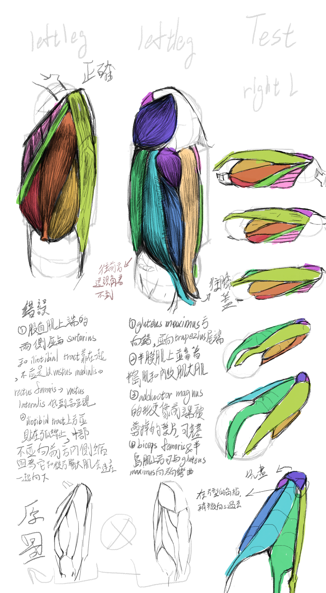

嗜好
自從五年前國中畢業以來，我就一直對藝術充滿熱情。最初我受到一位同學的影響，她當時的繪畫技巧比我好。當初創作出具有美感和藝術性的作品所帶來的感覺真的令人難忘，這也一直是我在藝術領域不斷進步的動力之一，尤其是在透視、人體結構、構圖和設計方面。
除了專注於運用各種技巧使我的作品更具吸引力之外，我也會研究如何透過學習各種美學風格來了解怎麼將作品中特定的情感傳遞給觀眾，例如Frutiger Aero、Dreamcore、Vaporwave等等。要從中選出最愛幾乎是不可能的，但我個人偏愛Frutiger Aero，因為它清新、簡潔、充滿希望，又帶有一絲懷舊的氣息。這種設計風格從2004年到2013年盛行一時，並被許多產品所採用，例如Windows Vista的介面、世嘉玩具的IDog以及早期的任天堂週邊產品。它是我童年不可磨滅的一部分，也是我們曾經被寄予厚望的未來。令人遺憾的是，Frutiger Aero在2013年左右開始衰落，被扁平化設計所取代。除了這種特定的美學風格之外，那些能喚起懷舊之情的風格也總能讓我心生眷戀。例如，早期的PlayStation遊戲封面深深吸引了我，甚至讓我夢想著能為作曲家和遊戲開發者設計專輯封面或遊戲封面。我找不到一個特定的風格來為這些遊戲封面分類，但我能辨認出其中一些帶有千禧年未來主義或恐怖頹廢的風格。
我目前正在學習一位名叫荒木飛呂彥的著名漫畫家的繪畫技巧，因為我非常崇拜他。從一種藝術風格轉換到另一種風格確實很難，重要的是要與目標藝術家在藝術理念和哲學上產生共鳴，因為他們的藝術風格本質上是他們經驗的總結。透過借鑒荒木在創作作品時的重點和偏好，我可以更好地理解他的藝術風格。我聽說荒木對石膏雕塑情有獨鍾，當我欣賞他的一些精美作品時，也有同樣的感受。他作品中細膩的線條無疑是他的標誌性特徵之一。這些線條通常用來表現布料的褶皺或垂墜感，並有助於淡化一些暗部。此外它們還能展現不同物體的結構，例如肌肉、衣物的起伏或地形，從而強調空間概念。有些線條運用得十分巧妙，粗細交替，或與細線並行，以暗示微妙的結構變化，這種手法常見於顴骨、頭髮和衣著等部位。透過觀察他的線條運用，不難看出人物雕塑對他的創作產生了多麼深遠的影響，使他能夠如此精準地刻畫不同物體的結構。
我目前正在Instagram上創作一個系列作品，用不同的美學風格繪製《JOJO的奇妙冒險》中的角色，以此來學習各種不同的美學風格，同時也想了解荒木飛呂彥的畫風。其中一些作品在網路上獲得了相當不錯的關注度和認可。此外，我還在努力提升影片剪輯技巧，希望能讓我的系列作品更具吸引力。
